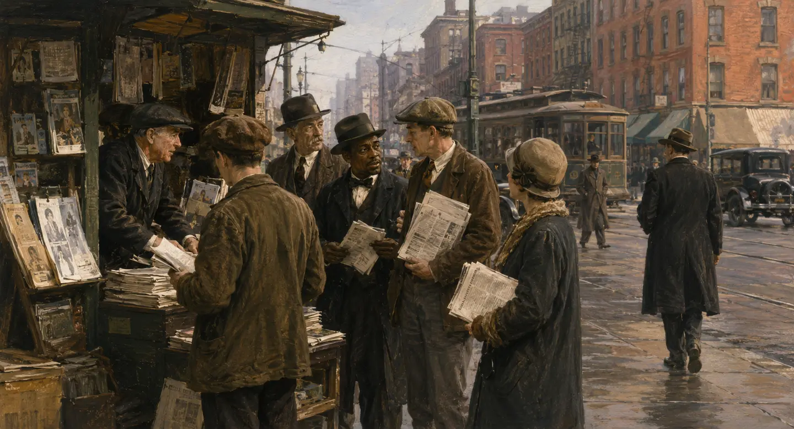

200 Years Ago
Early American News
Major Headline
View Original Source →
Three eras. Many voices. One day in the life of our nation.

Multiple published headlines from the same historical date.
Each edition begins with a major daily selected by documented historical circulation and reach. Representative minority papers are then ranked by reach and longevity: direct coverage first, same-topic reporting second, and a labeled source audit only when no topical item was verified.
These clearly illustrative period settings provide atmosphere only. Article imagery appears solely when it is rights-cleared and matched to the exact published story.
An editorial reconstruction of an 1820s print shop and its readers.
An editorial reconstruction of readers gathering at a city newsstand.
An editorial reconstruction of Americans reading the news in 1951.
An editorial reconstruction honoring the work of the 1920s Black press.